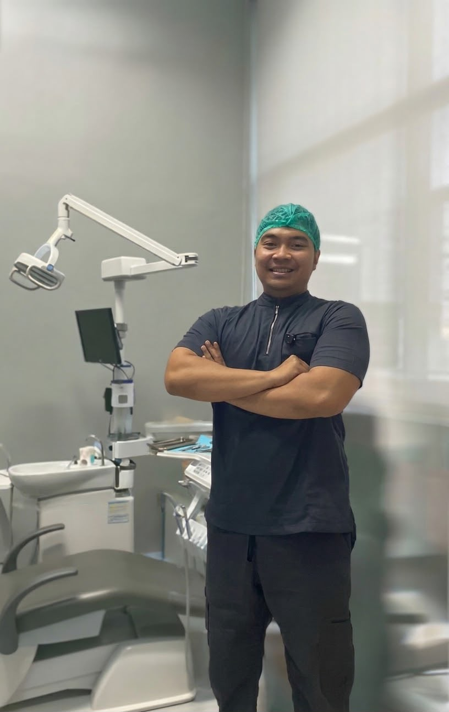

Profil Edukator
Antoni Dwi Saputra, S.Tr.Kes
Praktisi Kesehatan Gigi dan Mulut
Berdedikasi dalam memberikan edukasi serta intervensi kesehatan langsung kepada masyarakat. Fokus utama beliau adalah meningkatkan kesadaran akan pentingnya menjaga kesehatan gigi dan mulut sejak dini untuk mencegah penyakit yang lebih serius.
Melalui program intervensi di Kampung KB, beliau aktif memberikan penyuluhan mengenai cara menyikat gigi yang benar, pencegahan karies, hingga pentingnya pemeriksaan rutin setiap 6 bulan sekali.